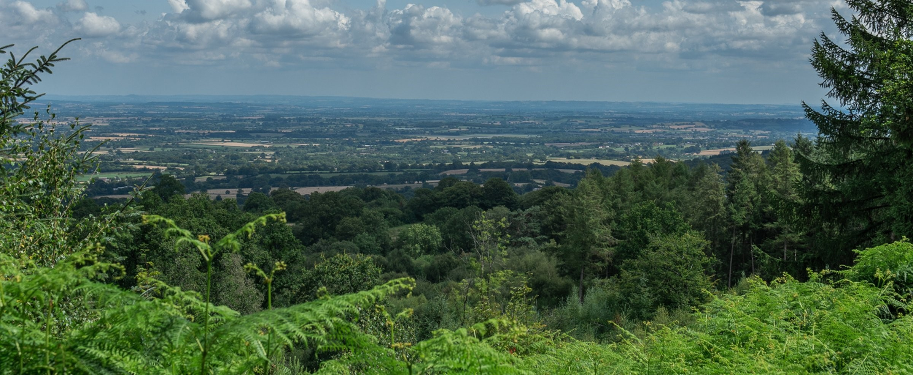
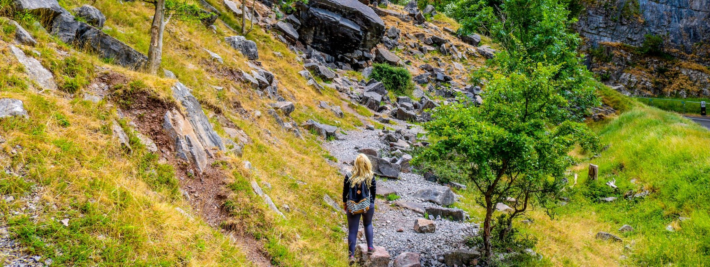
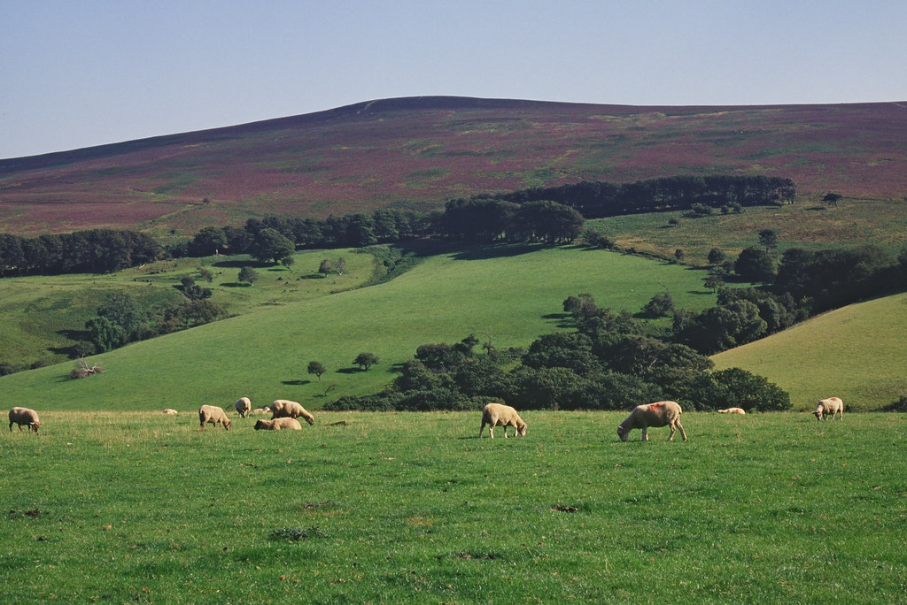

Somerset Trails
Staple Hill
Cheddar Gorge
Blagdon Lake
Somerset Coastal Path
Exmoor National park
☰
Explore the best trails one step at a time
Explore the trails below
2 / 6

View here: Staple Hill
3 / 6

View here: Cheddar Gorge
4 / 6
View here: Blagdon Lake
5 / 6
View here: Somerset Coastal Path
6 / 6

View here: Exmoor National Park
Somerset Map
Our trails
Explore
Staple Hill
Cheddar Gorge
Blagdon Lake
West Somerset Coastal Path
Exmoor National Park
☰
Top